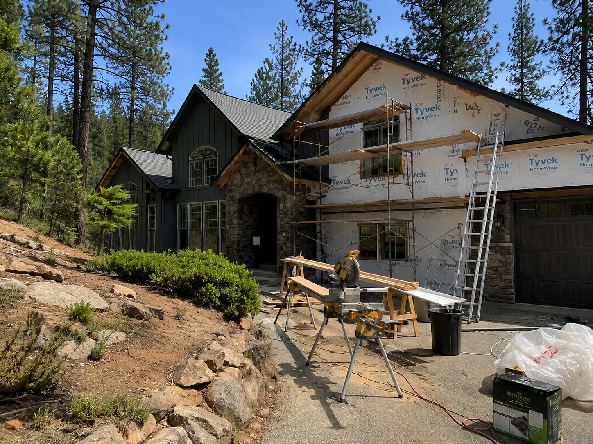

Finish Carpentry & Trim
Crown molding, baseboards, door casings, built-ins, and detail work that give a home its character. Ian's specialty.
Learn more →
From decks and retaining walls to finish carpentry and flooring — Wright Carpentry brings skilled trades and honest craftsmanship to every job in Pollock Pines and beyond.
Wright Carpentry handles the projects homeowners rely on most — from structural work and exterior improvements to interior finishing and everyday repairs.
Crown molding, baseboards, door casings, built-ins, and detail work that give a home its character. Ian's specialty.
Learn more →
Warped boards, failing posts, rotted ledgers — we assess and repair decks to make them safe, solid, and beautiful again.
Learn more →
Timber, block, and natural stone retaining walls built to hold ground on the Sierra foothill terrain we know well.
Learn more →"Ian repaired our deck and replaced all the rotted boards and footings. Showed up when he said he would, kept things clean, and the deck looks brand new. Will call him again without question."
"We had Ian install hardwood floors throughout the main floor and do all the finish carpentry — baseboards, casings, the works. The quality is outstanding. Our neighbors keep asking who we used."
"Ian built us a retaining wall on a tricky sloped lot and also replaced our back fence. Both turned out perfect. He's the kind of contractor you're grateful to have found."

Ian Wright grew up with tools in his hands and a deep respect for doing things right. Based in Pollock Pines, Ian personally oversees every project — from the initial walkthrough to the final coat of paint.
Wright Carpentry focuses on the full range of trades that keep homes safe, functional, and beautiful. Whether it's a failing deck, a stubborn door, new flooring throughout, or a retaining wall to hold back the hillside — Ian has the skills and the work ethic to get it done right.
Real work, real results. Every project is a job Ian is proud to put his name on.


A full deck rebuild in Pollock Pines — see the transformation.
Call or submit the form. Ian will schedule a walkthrough at your property — no charge, no commitment.
You'll receive a clear, itemized estimate. No vague ranges or surprise line items when the job is done.
Ian personally performs the work or leads the crew. Jobsite is kept clean and you're updated throughout.
We walk you through the completed work. You're not satisfied until every detail meets your expectations.
Based in Pollock Pines, Wright Carpentry serves the Sierra Nevada foothills and greater Sacramento communities.
View All Service Areas →Ian is hands-on with every project. You're not handing your home to a subcontractor you've never met.
Written estimates before work begins. No change orders without your sign-off. No surprises at the end.
Ian lives in Pollock Pines. These are the neighborhoods he cares about. That accountability shows in the work.
We know home repairs can't always wait. Ian responds quickly and schedules work without months-long waits.
Work with confidence. Wright Carpentry carries full liability insurance and maintains all state licensing requirements.
Finish carpentry is Ian's calling. That eye for detail carries through every service — nothing sloppy leaves the jobsite.
Call or submit the form for your free, no-obligation estimate. Ian will get back to you fast.